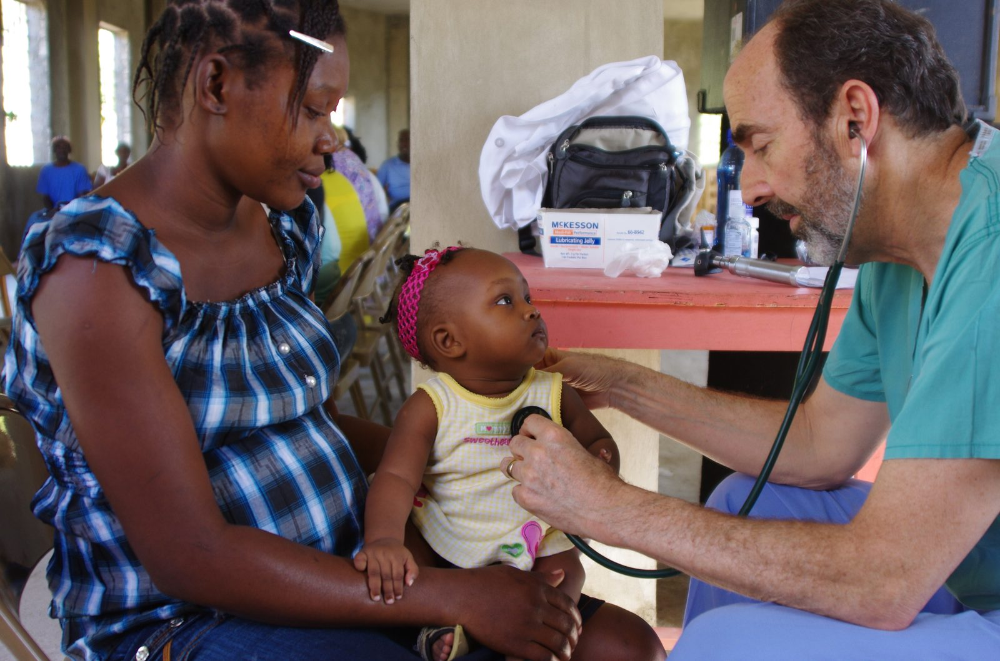
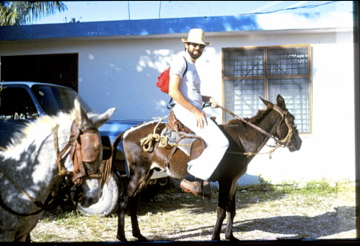
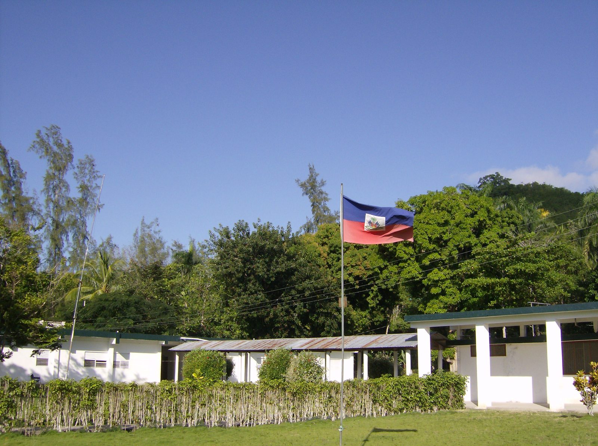

Haiti
Garry and Mitzi have a deep and long-standing connection with Haiti and its people.
Our story
Garry and Mitzi lived and worked for several years in a small mission hospital in the rural mountains of south Haiti. We learned the Haitian language and delivered many babies among other service activities such as training other doctors and nurses.
We have returned many times to help out a little for a few weeks. Lately because of the security situation we have not been able to visit. We return when we can, and Haiti remains a central part of who we are.
Pictures


